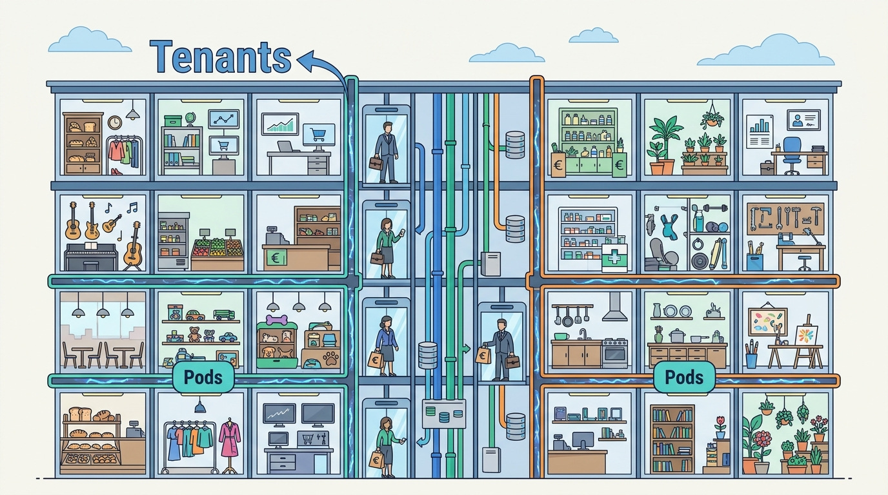

Part VII — PLATFORM: How Commerce Platforms Are Built
Many Merchants, One Platform: Multi-Tenancy, Pods and Isolation
AI-assisted: researched and written with Claude Code, images generated with the Gemini API. How this works

Part VII — PLATFORM: How Commerce Platforms Are Built
AI-assisted: researched and written with Claude Code, images generated with the Gemini API. How this works
